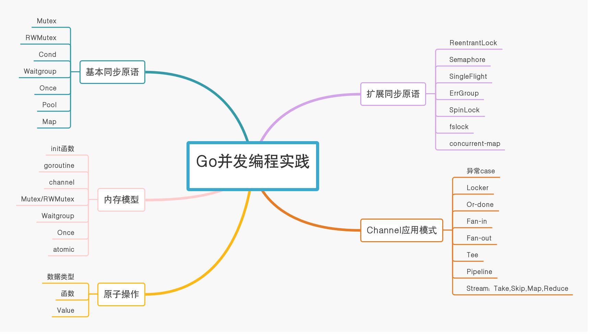
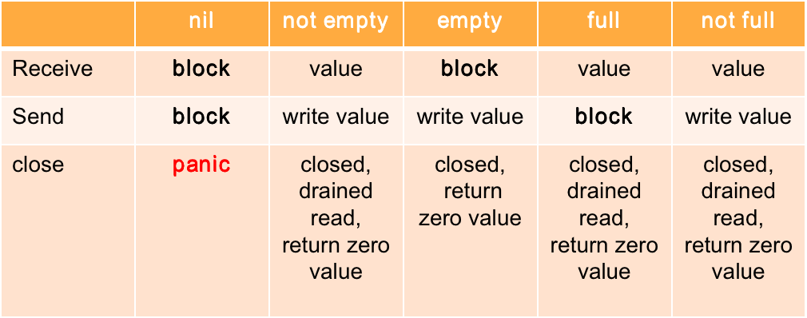

目录 [−]
昨天参加了 Gopher China 2019 大会，分享了《Go并发编程实践》的主题，在这一篇博客中总结一下。
从春节前开始我就有意识的收集和整理Go并发编程的相关知识，以前也有相关的博文进行过分享，本来是想以电子书的方式进行分享，正好Asta Xie邀请在Gopher China 2019上做一个分享，就毫不犹豫的答应了。
谈起Go并发编程的分享，每年各地的Go相关的大会都会有，基本上都会针对某一个专题进行介绍，或者针对Go并发编程的哲学进行分享。所以我给自己定了两个方向: 一个是结合业务讲一些Go并发编程在企业实际开发中的实践，另外一个是对Go并发编程做一个全面的总结。
我选择了后一个，也是最难的一个。一是内容非常多，而且不结合业务，只讨论编程语言相关的知识，因为涉及到细节，多少会有些枯燥，尤其是针对主要关注于业务同学，但是对于热心于Go编程语言的开发者来说，能有人对Go并发进行一个深入而全面的总结，对于自己回顾和整理Go并发编程的技能，多多少少会有所帮助的，所以我愿意进行一次尝试。
最初开始整理了很多的知识点，内容太多了，我忍痛删去了Go并发编程设计模式一节，第一版120多页的ppt发给Asta之后，Asta感觉还是太多，又忍痛删去了分布式并发原语这一节，最后整理了81页的PPT。我是实在不想删减了，再删减，就变成了《Go标准sync库在实践中的几个坑》，就偏离了我最初的分享的目的：全面总结Go并发编程知识，而退化成第一个选择：找一个直接点结合业务进行分享。编写PPT原则就是每一页都是干货。
80页的PPT想在45分钟内顺利的讲完，并且不讲业务只讲Go语言的特性，非常的困难，我预想到会拖堂，实际也完美做到了，所以后面的介绍比较的匆忙了，这些都在预想的流程之内，也是希望大家拿到ppt之后有个回顾，将来遇到并发的问题至少能在ppt找到答案。当然如果你不想看冗长的ppt和代码的话，这篇文章或许能对你的理解能够更顺畅一些，也希望对未能参加会议的朋友能有所帮助。
内容划分
Go并发编程的知识点非常多，最基本的goroutine因为非常简单，就不介绍了。大致把知识点划分成下面的五部分。

基本同步原语
Mutex
最常用的sync包下的同步原语之一。
自2008年开始，经过了几次大的修改，加入了公平性和性能综合的考量、饥饿的处理，今年又进行了内敛的优化，对功能和性能都有了很好的提升。
内部结构使用state标记是否加锁、唤醒、饥饿等状态，使用高位来记录等待者的数量。
虽然state是unexported的，但是你可以通过unsafe包hack方式读取这些状态。
- Unlock未加锁或者已解锁的Mutex会panic
- Mutex不会比较当前请求的goroutine是否已经持有这个锁，所以可以一个goorutine Lock,另一个goroutine Unlock,但是慎用，避免死锁
- 非重入锁, Java程序员转Go容易犯的错，会导致死锁。 如果想重入，使用扩展的同步原语。
RWMutex
读写锁对于读进行了优化，适合写少读多的状态，对并发的读很适合。
- 如果有goroutine持有了RWMutex,那么只可能被一组reader持有，或者被一个writer持有。
- 如果已经有一组reader持有了读写锁，这个时候如果writer调用Lock,它会被阻塞。接着如果有reader调用RLock, 等前面那组readerUnlock后， writer优先获取锁
- 不要在递归调用读锁。因为上一条的规定，递归调用锁容易导致死锁
- 可以将读锁返回成一个Locker的接口
Cond
类似Monitor，提供了通知的机制，可以Broadcast通知所有Wait的goroutine,也可以Signal通知某一个Wait的goroutine。
Cond初始化的时候要传入一个Locker接口的实现，这个Locker可以用来保护条件变量。
Broadcast和Signal不需要加锁调用，但是调用Wait的时候需要加锁。
Wait执行中有解锁重加锁的过程，在这个期间对临界区是没有保护的。
一定要使用for循环来检查条件是否满足，因为随时都可以触发通知。
Waitgroup
也是最常用的sync包下的同步原语之一。
内部通过一个计数器来记录waiter。
在Wait之前可以设置这个计数器的数量。等这个计数器为0的时候，所有等待的goroutine都都会解除等待，继续执行。
Add方法可以增加计数，也可以传入负值减少技术，但是如果计数器小于0的情况下会panic。
Done方法是利用-1实现的，因此Done的次数如果多于计数器，会panic。
Wait调用多次没问题，只要计数器为0，它就不会阻塞。
并发 Add和Wait会panic。
前一个Wait还没有完成就Add也会panic。
所以Waitgroup是可以 重用的，但是一定等前一个Wait完成后再重用。
Once
用来初始化一次，比如实现单例，单元测试时环境的准备。
不要在传给Do的函数中调用这个Once，否则会死锁。
即使传入的这个函数会panic，Once也认为它已经初始化了。
Go单例的实现：
- 常量
- package 变量 (eager)
- init函数 (eager)
- GetInstance() (lazy)
- 通过sync.Once或者类似实现
A XXX must not be copied after first use.
看上面的同步原语的 godoc，都有这么一句话。对象使用后就不能被复制了。
这是因为使用后这些对象都是有状态的，复制过去也会把状态复制过去，比如已加锁的状态，这不是我们期望的。
可以通过go vet工具检查。
如果你定义的struct也想有这个功能，可以使用noCopy这种经济的方式，定义Locker接口，让vet工具也能检查。
简单的复制是容易看出来的，很多隐藏的复制检查可以通过工具。
Pool
- 临时对象池
- 可能在任何时候任意的对象都可能被移除
- 可以安全地并发访问
- 装箱/拆箱
tcp、数据库连接池的话不要使用它，使用专门的池。
标准库中有的池的实现使用它，有的需要永久持有的对象不使用它，而是使用链表，比如rpc。
用它做buffer池要注意，避免内存泄漏。Pool的官方例子和标准库fmt、json中都有这个坑。标准库中已经修复了。
Map
使用空间换时间的方式，提供下面两个场景下的性能：
- 设置一次，多次读，比如cache
- 多个goroutine并发的读、写、更新不同的key
有以下的考量：
- 装箱/拆箱
- Range进行遍历,可能会加锁
- 没有Len方法，并且也不会添加
扩展同步原语
对基本同步原语的补充，适用于额外的场景，由Go扩展包(试验包)和第三方提供。
ReentrantLock
标准库sync下的Mutex是不能重入的，如果想实现重入的话，可以利用:
- goid:用来标记谁持有了当前锁，重入了几次
- 全局id:或者你自己维护一个全局id,但是实现的结构不再满足Locker接口
可重入锁也叫做递归锁，但是叫可重入锁更准确些，因为可重入可不只递归这么一种情况。
Semaphore
Dijkstra提出并发访问通用资源的并发原语，使用PV原语提供对临界区的保护。
二进制(取值0,1)的semaphore提供了锁的功能。
计数器semaphore提供了对一组资源的保护。
包 golang.org/x/sync/semaphore。
标准库内部的semaphore提供了休眠/唤醒的功能，用来实现基本同步原语的阻塞。
SingleFlight
并发的访问同一组资源的时候，只允许一个请求进行，这个请求把结果告诉其它等待者，避免雪崩的现象。
比如cache 失效的时候，只允许一个goroutine从数据库中捞数据回种，避免雪崩对数据库的影响。
扩展库中提供。
ErrGroup
应用于 half sync/half async的场景(这个设计模式以后有机会再介绍)。
有一组异步的任务需要处理，利用这个原语可以等待所有的异步任务完成，并获取第一个错误。
如果想得到所有的错误，利用额外的map变量进行记录。
使用Context可以实现遇到第一个错误就返回。
扩展包中提供。
bilibili扩展了这个原语，提供了限定并发数量的功能。
SpinLock
- 自旋锁
- 有时候很高效,因为当前CPU中运行的goroutine更有机会获取到锁
- 不公平
- 需要处理器忙等待
- 应用于竞争不是很激烈的状态
fslock
文件锁， 可以控制多个进程之间的同步。
concurrent-map
类似Java中的ConcurrentMap的设计思想，将key划分成一定数量的shard,每个shard一个锁，减少锁的竞争。
相对于sync.Map，可以应用写/删除/添加更频繁的场景。
原子操作
保证操作是原子的。
操作的数据
- int32
- int64
- uint32
- uint64
- uintptr
- unsafe.Pointer
操作方法
- AddXXX (整数类型)
- CompareAndSwapXXX：cas
- LoadXXX：读取
- StoreXXX：存储
- SwapXXX：交换
Subtract
- 有符号的类型，可以使用Add负数
- 无符号的类型，可以使用AddUint32(&x, ^uint32(c-1)),AddUint64(&x, ^uint64(c-1))
- 无符号类型减一， AddUint32(&x, ^uint32(0))， AddUint64(&x, ^uint64(0))
Value
一个通用的对象，可以很方便的对struct等类型进行原子存储和加载。
由于不同的架构下对原子操作的支持是不一样的，有些架构师是不支持的。
Channel
channel容易再犯错，甚至于比使用传统sync包下的同步原语的错误率还要高，牢记异常的情况：

close已经close的channel也会panic。
利用channel可以实现锁，并且可以实现TryWithTimeout方法，因为利用Go的内存模型可以保障，但是正常情况channel和mutex有不同的应用场景。
Channel
- 传递数据的owner
- 分发任务
- 交流异步结果
- 任务编排
Mutex
- cache
- 状态
- 临界区
Channel的一些应用模式可以参考另一篇文章: Go Channel 应用模式
Go内存模型
内存模型描述了线程(goroutine)通过内存的交互，以及对数据的共享使用。
Java语言是第一个详细描述其内存模型的流行的编程语言。
它并不是描述内存是如何分配的，而是定义了：
对同一个变量，如何保证在一个goroutine对此变量读的时候，能观察到其它goroutine对此变量的写。
描述这种顺序关系的术语叫做happen before。
单个goroutine内
执行顺序和代码编写的顺序是一致的（有reorder，也不影响理解，可以按照编写顺序进行分析）
包级别的init函数
在单个goroutine中执行
最底层引入的包的init先执行。之后再是main函数。
提供问题： 同一个包下可以定义多个init函数吗？
go语句
- goroutine的创建happens before所有此goroutine中的操作
- goroutine的销毁happens after所有此goroutine中的操作
channel
- 第n个send一定happen before第n个receive完成, 不管是buffered channel还是unbuffered channel
- 对于capacity 为m的channel,第n个receive一定happen before第 (n+m) send完成
- m=0 unbuffered。第n个receive一定happen before第n个send完成
- channel的close一定happen before receive端得到通知，得到通知意味着receive收到一个因为channel close而收到的零值
注意 send/send completes，receive/receive completes的区别
Mutex/RWMutex
- 对于Mutex/RWMutx m, 第n个成功的 m.Unlock 一定happen before 第 n+1 m.Lock方法调用的返回
- 对于RWMutex rw，如果它的第n个rw.Lock已返回，那么它的第n个成功的rw.Unlock的方法调用一定happen before 任何一个 rw.RLock方法调用的返回（它们 happen after 第n个rw.Lock方法调用返回）
- 对于RWMutex rw,如果它的第n个rw.RLock已返回，接着第m (m < n)个rm.RUnlock方法调用一定happen before 任意的 rw.Lock(它们happen after 第n个rw.RLock方法调用返回之后)
Waitgroup
- 对于 Waitgroup b, 对于其计数器不是0的时候，假如此时刻之后有一组wg.Add(n),并且我们确信只有最后一组方法调用使其计数器最后复原为0，那么这组wg.Add 方法调用一定happen before 这一时刻之后发生的wg.Wait
- wg.Done()也是wg.Add(-1)
Once
- once.Do方法的执行一定happen before 任何一个once.Do方法的返回
Atomic
- 没有官方的保证
- 建议是不要依赖atomic保证内存的顺序
- #5045 历史悠久的讨论，还没close